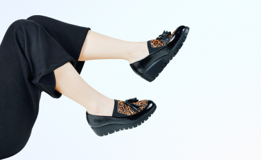
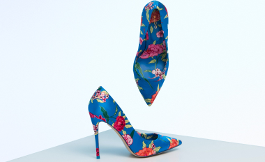
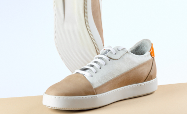

Как ухаживать за кожаной обувью
Обувь из натуральной кожи практичная, красивая и долговечная. Благодаря материалу, в ней тепло зимой и не жарком летом. Чтобы кожаная обувь прослужила вам ни один год, за ней необходимо правильно и своевременно ухаживать.
Читать статью

Как выбрать обувь в 2021
Стилист и ведущая программы “Все о моде” Ева Миллер рассказала о трендах обуви этого года. Современная мода удивляет многообразием формы и цветовой гаммы, а ключевым трендом является комфорт, удобство и лаконичность.
Читать статью

Как правильно выбирать кеды
Кеды - одна их самых популярных моделей обуви уже не первый сезон. Их можно носить с любой одеждой: платьем, костюмом, джинсами и т.д. Такую обувь любят и мужчины и женщины и дети. Рассказываем, как выбрать качественные кеды.
Читать статью